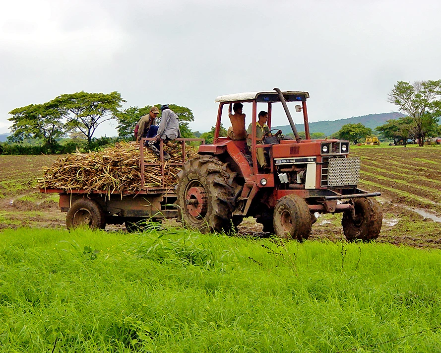

Reseña Histórica
Orígenes y Fundación
El Municipio San Rafael de Onoto, ubicado en el noreste del estado Portuguesa, cuenta con una superficie de 187 km² y una población aproximada de 17.600 habitantes. Su capital es la localidad homónima, San Rafael de Onoto, fundada el 9 de mayo de 1726 como misión religiosa por frailes españoles y portugueses. En sus orígenes estuvo habitado por comunidades indígenas como los otomacos, amaibos, guaranaos y guamos, que marcaron la identidad cultural de la región.

Nuestra Galería


Ver más fotos →
×

×

Como Llegar?
Impulsa tu Comercio
Registra tu negocio en el portal oficial de San Rafael de Onoto